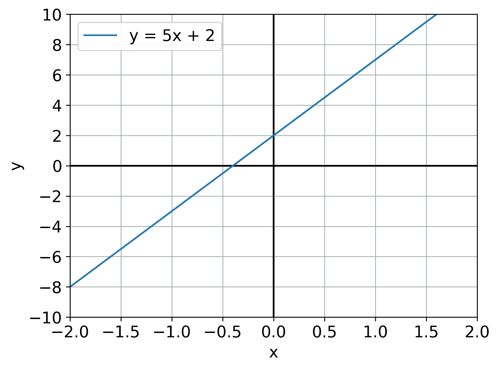
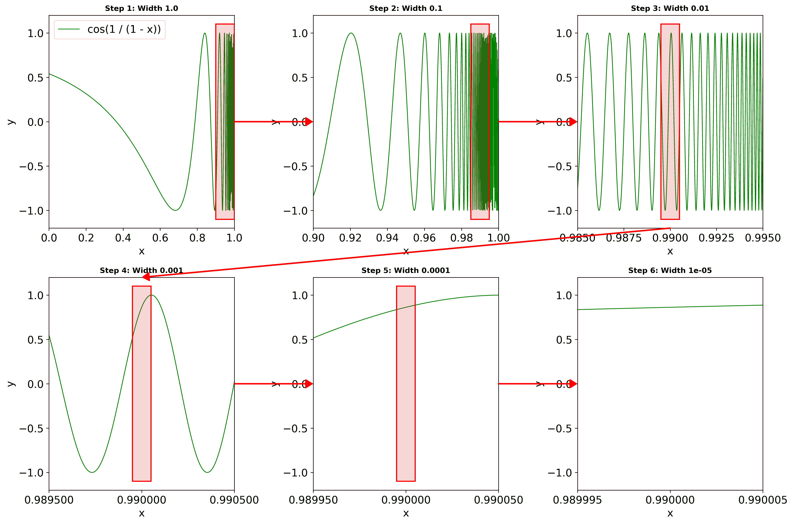
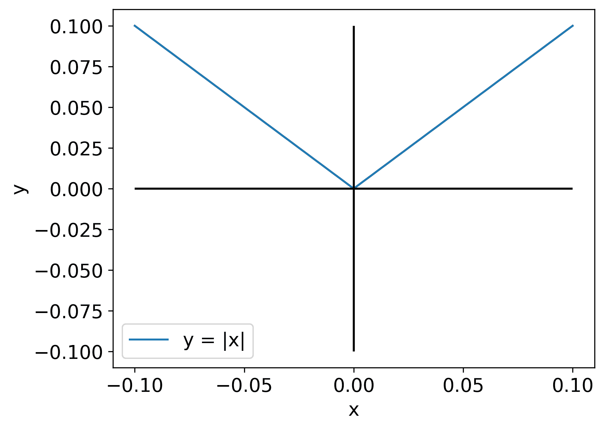
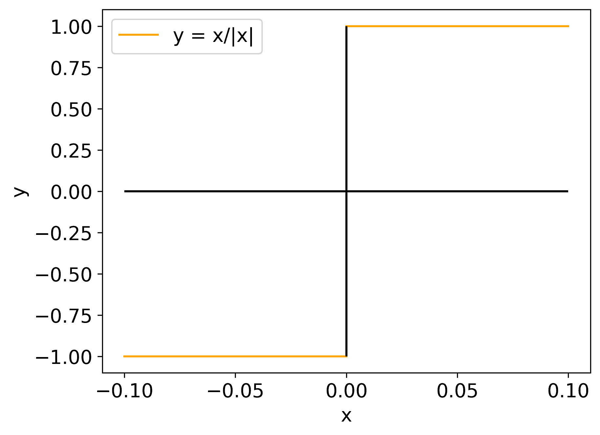

Many of the examples in Linear Algebra are relevant here too, but I want to take a different approach to motivating calculus.
I think the most powerful ability of calculus is mathematical modelling.
This is the skill of taking something in real life, describing it with mathematics, and then using the mathematics to predict what will happen in the future or in alternate scenarios.
For example, if NASA want to launch a rocket, they need to know how much fuel it needs. Taking too much fuel is expensive, taking too little fuel is catastrophic. It is unfeasible to launch multiple missions to figure it out by trial-and-error too.
What they will do instead is create a mathematical model from measurements on the ground. They'll measure the weather at different altitudes, the rocket's thrust, the Earth's gravity, etc. and then use the tools of calculus to predict how much fuel is needed.
They'll then simulate what can go wrong, and how much extra fuel those scenarios would need, all without actually endangering their astronauts.
Mathematical modelling is the foundation of physics, and I'd say most other sciences too. The physical laws that we learn are our best mathematical model of the world, and we constantly use them to simulate, predict and ultimately guide our decision making.
Mathematical models predict the weather, predict new medicines, predict new materials (e.g for solar panels or smaller transistors), create wings so planes can fly, and allow a computer to fly that plane.
We have some groundwork to cover to get to mathematical modelling. After this page you'll be able to calculate derivatives of some simple functions, and find where they take a maximum or minimum.
This skill is called optimisation, and we often want to optimise things. We want to minimise time taken for a journey, or maximise profit of a business
Introduction
Calculus mainly covers two topics, differential calculus and integral calculus. We'll start with differential calculus since it makes integral calculus much easier to understand.
Differential calculus is the study of rates of change. We are often interested not only in the current state of something, but also its future state. Imagine you're driving to work and your fuel gauge is near E.
If we ignore its rate of change, it being near E is fine. Nothing will go wrong until it's at E, however you're clearly interested in the fact that it is steadily dropping towards E as you drive.
Of course you can understand that situation without calculus, you just need to know the mileage of your car, but for more complex situations it is absolutely the right tool.
Going back to our rocket example, then the rocket becomes lighter as it uses fuel, and lighter things accelerate easier. The correct amount of fuel to pack for a mission is therefore not simple, as the 'mileage' of your rocket now depends on the fuel level itself.
Straight Lines
I want to take a slight detour before I introduce differentiation, the main operation of differential calculus. The equation of a straight line is
y = mx + c,
where m is the gradient, defining how steep the line is, and c is the intercept, defining where the line touches the y-axis at x=0. Here's a graph of y = 5x + 2:

"Gradient" is another word for the rate of change. If x increases by 1, y increases by m. If x decreases by 5, y decreases by 5m. We say that the rate of change of y with respect to x is m.
If we're told a line passes through two points, let's say (1,2) and (4,5), how do we calculate the line through it?
Well, the difference in x values is 3, so the difference in y values must be 3m. We can see that the difference in y values is also 3 though, so 3m = 3 meaning m = 1. If we were to decrease x by 1, y would decrease by 1, so at x = 0, y would be 1. The equation is
y = x + 1.
In general, if we have two points (x₁,y₁) and (x₂,y₂), we can see that y₂ - y₁ = m(x₂ - x₁), following the same logic as above. This means that
x₂-x₁
m=╶─────╴.
y₂-y₁
The intercept c is then y₁ - mx₁, but m is what we care about here.
Nearly Everything's a Straight Line Close Up
This is really the key to differential calculus. If you take a function, and keep zooming in on a point, it will usually look like a straight line. Here's a horrible looking example, the function
⎛ 1 ⎞
cos⎜╶───╴⎟
⎝ 1-x ⎠.
I've drawn it on the interval x=0 to x=1.0, and we're zooming in on x=0.99:

See? It's just a straight line after all. We had to zoom in 100,000x, but that's not important, the only important thing is that there's a zoom level where it looks straight.
A quick note on notation, I could've written "x∈[0,1.0)", where the symbol "∈" means "is in", and "[0,1.0)" means "the interval (set) of all numbers between 0 and 0.99, including 0 but not 1.0". I've also seen "[0,1.0[" but as a programmer that makes me even more uncomfortable than the other one.
To be clear, not everything becomes a straight line up close. Here's the absolute value function, y = |x|, at x=0:
No matter how much you zoom in on x=0, it'll always look like two separate straight lines. How do we know if this is case without actually zooming in until we're convinced? It's time to introduce the tools of calculus.
The Limit
Here's what we've been building up to: how do we measure the gradient of a function that isn't a straight line? The answer I've been alluding is to zoom in until it looks like a straight line, and then use the method for a straight line. Let's make this a bit more mathematical.
We have a function, f(x), and we want to know its gradient at a given point x. The coordinate of this point is (x, f(x)). We need a second point, so we take a step to a nearby point x+h, where h is the step size. This gives us a second point (x+h, f(x+h)). Our calculation for straight lines then gives us
f(x+h)-f(x) f(x+h)-f(x)
m=╶───────────╴=╶───────────╴.
(x+h)-x h
This is called the Difference Quotient. If we enforce h to be positive, this is also called the Forwards Difference, but we'll allow negative h.
Take a look at the first figure again - zooming in means choosing two points that are closer to each other. It means choosing a smaller step size, h. Let's take f(x) = x², and try finding the gradient at x = 1. Here's a figure testing a few values of h:
As we make h smaller, it seems our gradient gets closer to 2. We can show this with some simple algebra:
f(x+h)-f(x) (x+h)²-x² x²+2xh+h²-x² 2xh+h²
m=╶───────────╴=╶─────────╴=╶────────────╴=╶──────╴=2x+h.
h h h h
We can see that at x=1, m = 2+h. Clearly, as we make h smaller, m gets closer to 2. We can actually see that for any x, m gets closer to 2x.
Remember though, we cannot choose h = 0 because that means dividing by 0 in the difference quotient, and dividing by 0 is not allowed. This would represent measuring the gradient by comparing a point with itself, which doesn't make sense.
We will now define the limit. There's three parts to a limit.
Part 1 is our claim. We believe that as we make h smaller, m gets closer to 2.
Part 2 is the challenge to the claim. Suppose I am unconvinced. "No way", I say. "Here's a super small number, ϵ (epsilon), I bet it doesn't stay closer than that as we keep zooming in"
Part 3 is the response to the challenge. You must show me that if we restrict h to be small enough, then m is always within a distance ϵ from 2.
If, for any challenge ϵ, you can respond to the challenge, then the limit is proven, and we can say
lim 2+h = 2.
h⭢0
This reads as "The limit of 2+h, as h approaches 0, is 2".
Let's set up a bit of notation and then rewrite this definition with that notation before we prove it for real.
I mentioned the absolute value function, |x|, earlier. If x is negative, then |x| = -x, otherwise |x| = x. It takes a number and makes it positive. |x| can be seen as the distance of x from 0.
|x - a| then gives the distance of x from a rather than 0.
Let's also introduce a new Greek letter, δ (delta). It is typical to use this letter in the "response to the challenge" section.
Now let's redefine the limit, with our new notation and in more general language:
Part 1 is our claim. We believe the limit of some function g(h) as h ⭢ k is L
Part 2 is the challenge. Let ϵ > 0, the challenge is to find an h small enough that |g(h) - L| < ϵ
Part 3 is the response to the challenge. You must find some δ, depending on ϵ, such that |g(h) - L| < ϵ whenever |h-k|<δ
Now let's prove that the gradient of f(x) = x² is 2x.
We believe the limit of the gradient function m(h) = 2x+h as h ⭢ 0 is 2x
Let ϵ > 0, the challenge is to find an h small enough that |m(h) - 2x| < ϵ
We must find some δ such that |m(h) - 2x| < ϵ whenever |h|<δ
|m(h) - 2x| = |2x + h - 2x| = |h|, so we want |h| < ϵ whenever |h| < δ. Choosing δ = ϵ works.
Proof complete! We have proved that the gradient of x² is 2x.
The Derivative
Here's our final bit of new notation for now. We define the derivative of a function f(x) as
df f(x+h)-f(x)
╶──╴=lim╶───────────╴.
dx h⭢0 h
This is often also written as f'(x), or for functions where the time is the input you may see ḟ(t). For f(x) = x², we've proved that f'(x) = 2x, and f'(1) = 2 as we suspected.
You'll notice that it's often necessary to manipulate the expression in the limit until we're able to guess what the limit is. On the next page, we'll develop some new tools that let us calculate limits from ones we've already proven.
Continuity
While we're here, we can define a property called continuity. A function f(x) is continuous at a point a if
lim f(x+a)-f(x) = 0.
x⭢a
A function is continuous on an interval if it's continuous at every point in that interval.
This property is often described as "being able to draw the function without lifting your pen off the page". This is true, but doesn't quite capture the importance of continuity.
Let's take a continuous function, f(x) = |x|, and remove the point at x = 0 to create a new function. Here's a graph:

For a function to be continuous it means that there is a way to fill in the missing point so that it bridges the two disconnected pieces of the function, and that the function takes precisely that value at that point. The missing point above is precisely the limit of f(x) as x⭢0, and is 0.
Now let's look at the derivative of f(x):

Below x=0, the function is f(x) = -x so the gradient is -1. Above x=0, f(x) = x, so the gradient is 1. At x = 0 though, the derivative is undefined as there is no number that satisfies the limit in the definition.
This means that f'(x) has a missing value at x=0, and you can see from the graph that there's no way of filling in the value such that the two pieces are connected. It is not continuous at x=0. It is still continuous at all other points though.
I will talk about continuity a bit more rigorously later, since we'll need it for integral calculus, but having the intuitive idea will do for now.
Optimisation
A function f(x) will take its maximum or minimum (or just "extreme") values when f'(x) = 0. Why is this? Well, imagine that f'(0) = m, where m>0.
If we take a small enough step, h > 0, then we expect f(h) to be roughly f(0) + mh. This is us saying that if you zoom in far enough on f(0), it looks like a straight line with gradient m.
Since m > 0 and h > 0, then f(h) ≈ f(0) + mh > f(0). Similarly, f(-h) ≈ f(0) - mh < f(0). Clearly f(0) is not a maximum or minimum, because we just found both a larger and smaller point.
This is not a proof, mind you, because of my use of the "approximately equal" sign ≈, but we need to set up some more tools before we can prove this one for real.
Exercises
If you want some exercises, try finding the derivative of f(x) = mx + c using the method of limits. You already know the answer is f'(x) = m since it's just a straight line.
As a harder exercise, try finding the derivative of f(x) = x³ - x, given that (x + h)³ = x³ + 3hx² + 3h²x + h³. The answer is f'(x) = 3x² - 1.
Continuing from the last example, find the extreme points of f(x) by solving the quadratic equation f'(x) = 0. Here's a graph of the answer: